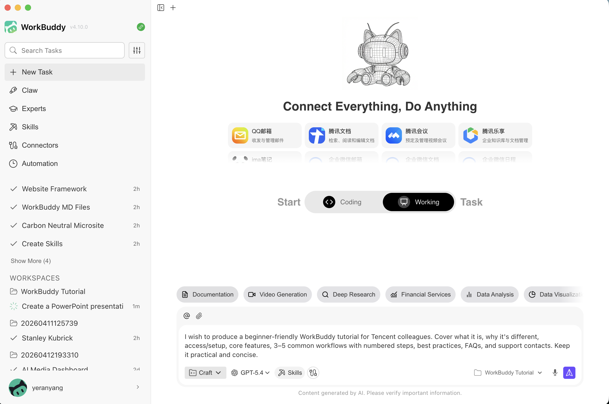

聊天时代
ChatGPT 等大语言模型出现。你问，它答——能写文章、做翻译、生成代码。但只是一段对话，说完就结束。你负责把对话结果变成实际行动。
认识 WorkBuddy — 一人指挥，140+ 专业 AI 角色协作，从策略到交付一站搞定。
腾讯 · 杨光
“任何足够先进的技术，初看都与魔法无异。”
— 阿瑟·克拉克
02 — AI 进化简史
从一问一答到自主干活——三个时代，三次跨越。了解这段历史，你就知道 WorkBuddy 为什么是现在。
ChatGPT 等大语言模型出现。你问，它答——能写文章、做翻译、生成代码。但只是一段对话，说完就结束。你负责把对话结果变成实际行动。
AI 开始学会调用工具——搜索网页、读取文件、操作数据。能做单一任务了，但范围有限，每一步都还需要你确认和推动。
WorkBuddy。140+ AI 角色各司其职——运营定策略、设计出图、开发写代码、营销写文案。你设定目标，专家团自主规划、执行、交付。
关键洞察：不是 AI 突然变聪明了——是它学会了连续做事。就像你不需要盯着一个靠谱的同事每一步，你只需要告诉他要什么，然后看结果。
03 — 什么是 WorkBuddy
一句话说清楚： WorkBuddy 是一个 AI 桌面工作台。你用日常语言描述任务，它会自己规划步骤、调用工具，最终给你一个可以直接用的结果，而不是一段需要你再加工的文字。
生成式 AI
01你问，它答。能写文章、做总结、翻译、生成代码——但回答完就结束了。
比如：写一段文案、总结一份文件、生成一段代码
AI 智能体
02一个 AI 智能体专注于特定工作。它能调用工具，比纯对话更自主，但范围相对受限。
比如：搜索、整理文件、排日程、更新数据
自主式 AI
03它围绕更大目标自主规划、调用工具、协调多个步骤，直到产出可用的交付物。
比如：规划 → 协调 → 执行 → 交付
04 — 怎么工作
WorkBuddy 收到你的任务后，不是"一拍脑袋给答案"。它像你一样——先看情况、想清楚、做计划、动手干、回头看，循环往复直到把事做完。
感知—行动循环
五个阶段循环工作，每个阶段都为下一阶段提供输入。
从文件、工具和上下文中收集信息
理解当前情况，确定什么最要紧
把目标拆成步骤，选择最优路径
调用工具和系统真正做事，不只是描述
检查结果，从反馈中学习，下一轮更好
关键洞察：区别不在于智力——智力一直都在。区别在于连续性、上下文和连接能力。
05 — 能帮你做什么
用日常语言说清楚你想干什么。WorkBuddy 会读取需要的文件，规划执行步骤，调用合适的工具，最后把你能直接审阅、修改、使用的东西交到你手上。
核心能力 × 适用场景
一句话召唤 140+ 领域专家——运营、设计、开发、营销角色并行工作，一个人顶一支团队。
大目标自动拆解成步骤，选择工具和模型，从规划到交付全程自主推进。
扫码绑定微信/飞书/钉钉，出门在外用手机发消息，电脑端的 AI 照样干活，结果实时回传。
直接操作你授权文件夹里的 Word、Excel、PPT、PDF、代码——打开、编辑、生成、导出一条龙。
06 — 不只是聊天
你用的 ChatGPT 和 WorkBuddy 不是一回事。前者是对话工具，后者是工作搭档。
07 — 怎么开始
去官网下载 Mac 或 Windows 版，安装后打开即可。
创建一个新任务，用日常语言描述你想做的事情。
WorkBuddy 会在右侧面板展示结果，你可以直接下载或继续修改。

一个工作台——任务、上下文、工具和结果都在一个窗口里。
安全可控
WorkBuddy 只能访问你明确授权的文件夹，电脑上的其他内容它看不到。
它在你本地桌面运行，工作文件和上下文都在你自己的电脑上。
删除文件、对外发送等危险操作会要求二次确认，并展示预览。
08 — 越用越懂你
有没有反复跟 AI 说明自己的角色和项目，说了几十遍？WorkBuddy 有记忆——它在你的电脑上维护一小份笔记，下次打开还记得上次聊到哪了。
告诉它你的角色、团队和在做什么项目。它会在每次对话里自动带入这些背景信息，你不用从头解释。
设定它的名字、说话风格和工作边界。喜欢直接还是温和？输出要简洁还是详细？它会按你喜欢的方式跟你工作。
每次合作的关键决策、偏好和反馈都会被记下来。下次遇到类似的事情，它会参考这些经验。
所有记忆都是你能直接打开的纯文本文件。觉得记得不对？打开改一个字就好。想删掉？直接清空。透明，可控。
***REMOVED***.workbuddy/ 目录下，纯文本 .md 格式。就像一本你随时能翻看的笔记本——没有黑箱。
09 — 数据隐私
用 AI 工具时最担心什么？不外乎"我的文件被传到哪了""它会不会记住不该记的东西""别人能不能看到我的数据"。WorkBuddy 的设计从一开始就考虑到了这些。
WorkBuddy 是桌面应用，核心引擎在你的本地机器上运行。你的工作文件和对话上下文都在你自己的电脑里，不需要上传到某个云端服务器。
WorkBuddy 只能看到你明确授权的文件夹。没授权的地方，它连目录列表都拿不到。每次打开新项目，你决定它能碰哪些文件。
所有记忆都是纯文本 .md 文件，放在 ***REMOVED***.workbuddy/ 目录下。你可以随时打开查看、编辑或删除——没有黑箱。
记住这个原则：用 AI 工具就跟用邮件一样——你输入了什么，它才能处理什么。养成好习惯：先用本地文件，再让 AI 操作；不确定敏感度时，先脱敏。
10 — AI 专家团
不是"换个提示词模板"，而是真正懂行的领域专家。每位专家背后融入了对应领域的专业知识体系、行业最佳实践和实战方法论。一句话召唤，多专家并行协作。
OPC 一人公司
召唤运营、设计、开发、法务等 AI 角色，并行协作交付完整工作。
"帮我做一次完整的新品上市方案——从市场调研、定价策略到推广物料。"
内容创作团队
AI 驱动多模态内容生产，从选题策略到图文创作端到端交付。
"围绕「远程办公效率」这个主题，产出公众号文章 + 小红书 3 篇 + 短视频脚本。"
11 — 技能市场
7 万+
已收录技能
3000 万+
累计下载
PDF 处理、办公文档四件套、小红书文案、代码审查、会议纪要……在技能市场里点一下「+」就装上。先逛市场，别自己造轮子。
热门技能
MCP 开放生态
支持自定义技能包、接入各类大模型。把 WorkBuddy 连接到你的邮箱、日历、在线文档、项目管理等外部系统。许多连接器遵循开放的 MCP 标准，即插即用。
12 — 助理
扫码绑定微信（也支持飞书、钉钉、QQ），出门在外发条消息，电脑端的 AI 自动执行——结果实时回传到手机。
四步上手
典型场景
🚀 关联功能：项目（Projects v5.0）
熟悉了基础操作后，可以体验「项目」——让多个 AI 共享同一份上下文、技能和文件，协同推进复杂工程。 看文档了解详情 ↗
13 — 模型与积分
WorkBuddy 提供多种模型选择——轻量模型做日常任务省积分，高性能模型攻克复杂问题。外部用户享有独立的积分体系。
新用户福利
5,000 免费积分
每日登录再领 100 积分
连登 7 天享 10 倍积分奖励
次月自动刷新免费额度
多模型可选
轻量 / 标准 / 高性能
日常整理选轻量模型省积分
深度分析切高性能模型
按需选择，不浪费
积分不够用？
月套餐 + 加量包
可购买积分加量包补充
详情见官网定价页
灵活搭配不浪费
ⓘ 与腾讯内部用户不同，外部用户无法使用内部免费模型。建议日常任务用轻量模型节省积分，重要任务切换高性能模型。 了解更多 ↗
14 — 上手案例
适合谁
操作步骤
示例提示词
根据这份选题简报，帮我写一篇面向普通读者的产品介绍文章。包含一个吸引人的标题、清晰的结构、以及我可以直接修改的初稿内容。
15 — 用好 AI 的习惯
告诉它任务是什么、用什么输入、好的输出应该长什么样。你越具体，它越不需要猜，输出就越准确。
WorkBuddy 更适合做执行搭档，而不是一锤子生成器。把大任务拆成小步骤，每一步审阅后再往下走。
不要让 AI 自动操作你不确定的东西。先在可见、可控的环境里跑通，再扩大范围。保留备份和版本记录。
16 — 快速上手
创建新任务
写一句清楚的任务描述
上传文件或贴截图（如果需要）
说明你想要的输出格式
发送任务
在对话区跟踪进展
在结果区审阅输出
好用的入门提示词
把这份会议记录整理成 6 页的执行摘要 PPT。
分析这个电子表格，写一份一页纸的洞察总结。
整理这个文件夹里的所有文件，按日期重命名。
角色 → 视角
「扮演危机公关顾问」和「扮演写这篇报道的记者」产出的内容完全不同。用角色来获得正确的视角，而不仅仅是执行力。
受众 → 语气
「给 CEO 看」vs「给大众看」vs「给技术记者看」——语气完全不同。不要让 WorkBuddy 自己猜。
约束 → 内置 QA
「300 字以内、避免被动语态、中文简体」。把你的检查清单写进提示词里。好的约束能省掉大部分来回修改。
17 — 选一个开始吧
不需要读完所有文档。下面四个任务，挑一个你最想解决的，打开 WorkBuddy 试试看。
召唤市场、运营、数据专家并行工作——收集信息、对比竞品、提炼趋势，产出一份结构化的分析报告。
试试看 →扫码绑定微信，出门时发条消息——"帮我把下午的录音转成会议纪要"——回来后已经在桌面等着你了。
试试看 →打开 SkillHub，搜"翻译"，点一下装上。以后随时用它翻译文档、邮件、网页内容，不用再切到别的工具。
试试看 →告诉它你这周做了什么，要点和成果是什么。它会整理成结构清晰、格式规整的周报，你只需微调几个字。
试试看 →18 — 结尾
“他从未长大，
但也从未停止成长。”
最快学会 WorkBuddy 的方式就是用它做一件真事——目标清晰、审阅点明确、习惯安全。
让人始终在回路里。
WorkBuddy 是一个效率工具，不是判断力的替代品。 你设定意图，你审阅输出，你来做最终决定。
现在，去找一件真事，试试看。